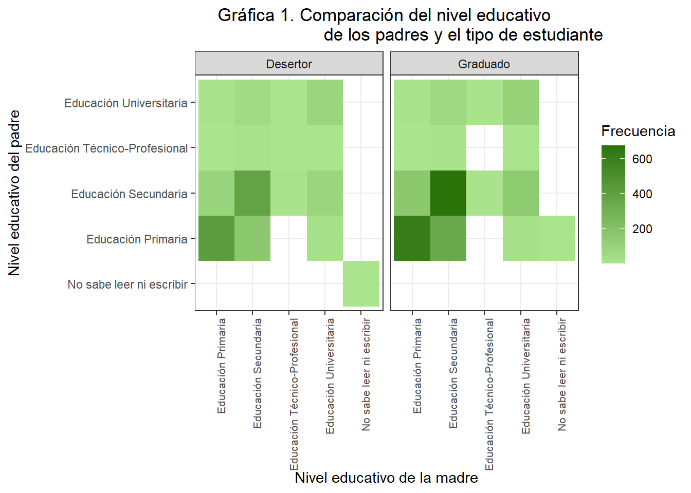
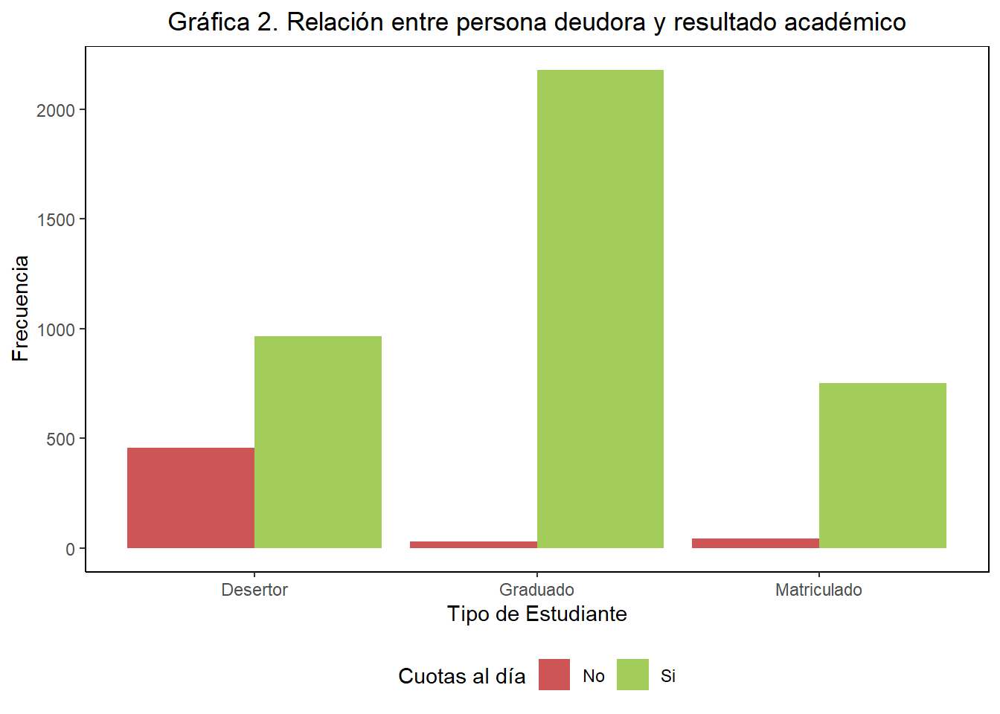
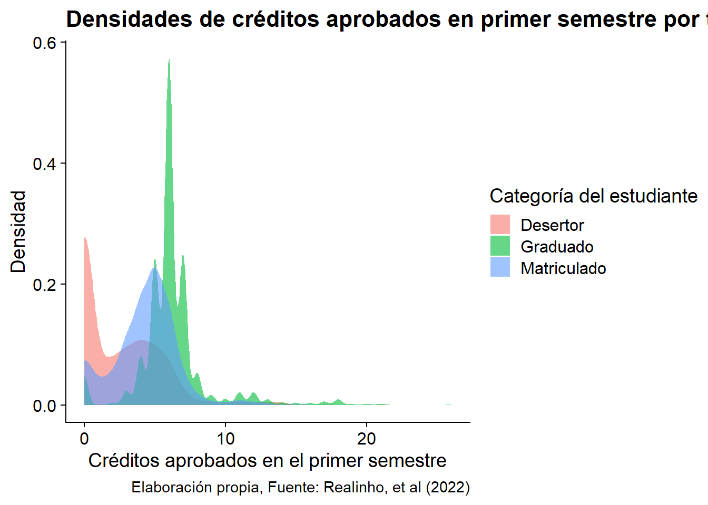
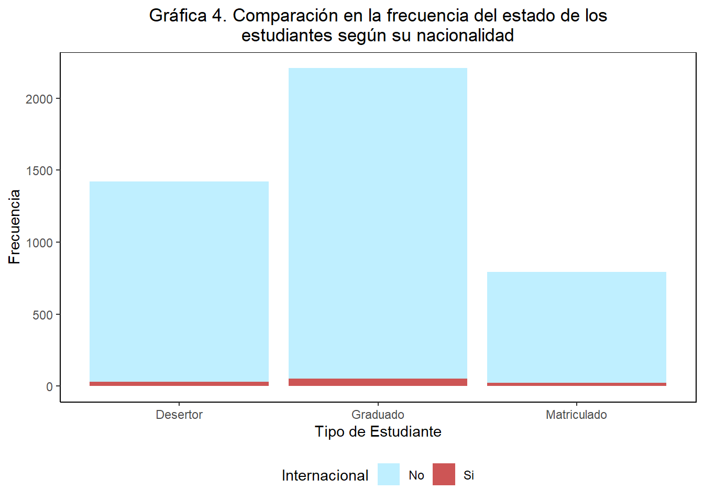
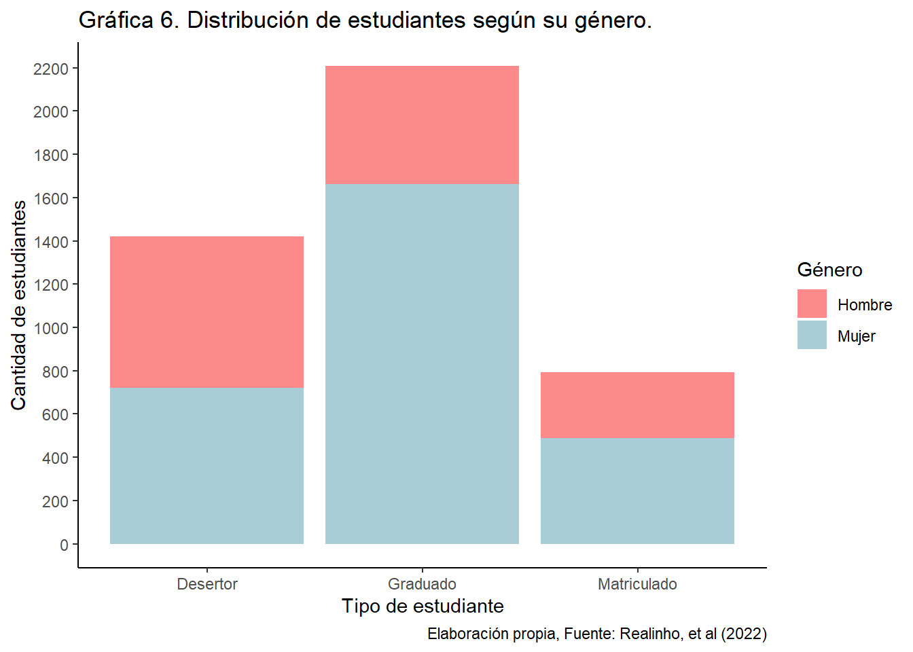

library(tidyverse)
library(janitor)
library(dplyr)
library(ggplot2)
library(knitr)
library(ggridges)
library(treemapify)
df <- read_csv2("base_datos/universidades_europeas.csv")
df <- df %>% clean_names()Bitacora 4
Graficas y tablas
Este es un gráfico de tipo heatmap que muestra la frecuencia de cada combinación de niveles académicos de padre y madre del estudiante, un color más oscuro significa mayor cantidad de observaciones de ese tipo. Además, está facetado por la categoría del estudiante (graduado, desertor o matriculado).
df <- df %>%
mutate(target = case_when(
target == "Dropout" ~ "Desertor",
target == "Enrolled" ~ "Matriculado",
target == "Graduate" ~ "Graduado",
TRUE ~ NA
))
df <- df %>%
mutate(mothers_qualification=case_when(
mothers_qualification== 1 ~ "Educación Secundaria",
mothers_qualification== 2 ~ "Licenciatura",
mothers_qualification== 3 ~ "Grado",
mothers_qualification== 4 ~ "Master",
mothers_qualification== 5~ "Doctorado",
mothers_qualification== 6 ~ "9 - 12mo Año de Escolaridad - No Completado",
mothers_qualification== 9 ~ "12º Año de Escolaridad",
mothers_qualification==10~ "11º Año de Escolaridad - No Completado",
mothers_qualification==11~ "7º Año (Antiguo)",
mothers_qualification==12~ "11º Año de Escolaridad",
mothers_qualification==13~ "2º Año del curso complementario de secundaria",
mothers_qualification==14~ "10º Año de Escolaridad",
mothers_qualification==18 ~ "Curso de comercio general",
mothers_qualification==19~ "Educación Básica 3º Ciclo (9º/10º/11º Año) o Equiv.",
mothers_qualification==20~ "Curso Complementario de Secundaria",
mothers_qualification==22~ "Curso técnico-profesional",
mothers_qualification==25~ "Curso Complementario de Secundaria - No Concluido",
mothers_qualification==27~ "7º Año de Escolaridad",
mothers_qualification==29~ "9º Año de Escolaridad - No Completado",
mothers_qualification==30~ "8º Año de Escolaridad",
mothers_qualification==31~ "Curso General de Administración y Comercio",
mothers_qualification==33~ "Contabilidad y Administración Suplementaria",
mothers_qualification==34~ "Desconocido",
mothers_qualification==35~ "No sabe leer ni escribir",
mothers_qualification==36~ "Sabe leer sin tener el 4º Año de Escolaridad",
mothers_qualification==37~ "Educación Básica 1º Ciclo (4º/5º Año) o Equiv.",
mothers_qualification==38~ "Educación Básica 2º Ciclo (6º/7º/8º Año) o Equiv.",
mothers_qualification==39~ "Curso de especialización tecnológica",
mothers_qualification==40~ "Educación Superior - Grado (1º Ciclo)",
mothers_qualification==41~ "Curso de estudios superiores especializados",
mothers_qualification==42~ "Curso técnico superior profesional",
mothers_qualification==43~ "Educación Superior - Máster (2º Ciclo)",
mothers_qualification==44~ "Educación Superior - Doctorado (3º Ciclo)",
TRUE ~ "Desconocido"
))
df <- df %>%
mutate(fathers_qualification=case_when(
fathers_qualification == 1 ~ "Educación Secundaria",
fathers_qualification == 2 ~ "Licenciatura",
fathers_qualification == 3 ~ "Grado",
fathers_qualification == 4 ~ "Master",
fathers_qualification == 5~"Doctorado",
fathers_qualification == 6 ~ "9 - 12mo Año de Escolaridad - No Completado",
fathers_qualification == 9 ~ "12º Año de Escolaridad",
fathers_qualification==10~ "11º Año de Escolaridad - No Completado",
fathers_qualification==11~ "7º Año (Antiguo)",
fathers_qualification==12~ "11º Año de Escolaridad",
fathers_qualification==13~ "2º Año del curso complementario de secundaria",
fathers_qualification==14~ "10º Año de Escolaridad",
fathers_qualification==18 ~ "Curso de comercio general",
fathers_qualification==19~ "Educación Básica 3º Ciclo (9º/10º/11º Año) o Equiv.",
fathers_qualification==20~ "Curso Complementario de Secundaria",
fathers_qualification==22~ "Curso técnico-profesional",
fathers_qualification==25~ "Curso Complementario de Secundaria - No Concluido",
fathers_qualification==27~ "7º Año de Escolaridad",
fathers_qualification==29~ "9º Año de Escolaridad - No Completado",
fathers_qualification==30~ "8º Año de Escolaridad",
fathers_qualification==31~ "Curso General de Administración y Comercio",
fathers_qualification==33~ "Contabilidad y Administración Suplementaria",
fathers_qualification==34~ "Desconocido",
fathers_qualification==35~ "No sabe leer ni escribir",
fathers_qualification==36~ "Sabe leer sin tener el 4º Año de Escolaridad",
fathers_qualification==37~ "Educación Básica 1º Ciclo (4º/5º Año) o Equiv.",
fathers_qualification==38~ "Educación Básica 2º Ciclo (6º/7º/8º Año) o Equiv.",
fathers_qualification==39~ "Curso de especialización tecnológica",
fathers_qualification==40~ "Educación Superior - Grado (1º Ciclo)",
fathers_qualification==41~ "Curso de estudios superiores especializados",
fathers_qualification==42~ "Curso técnico superior profesional",
fathers_qualification==43~ "Educación Superior - Máster (2º Ciclo)",
fathers_qualification==44~ "Educación Superior - Doctorado (3º Ciclo)",
TRUE ~ "Desconocido"
))
df$mothers_qualification<-as.factor(df$mothers_qualification)
df$fathers_qualification<-as.factor(df$fathers_qualification)
sum_mothers_qualification<-df %>%
mutate(mothers_qualification=fct_collapse(mothers_qualification,
"Primaria completada" = c("7º Año (Antiguo)","7º Año de Escolaridad",
"Educación Básica 2º Ciclo (6º/7º/8º Año) o Equiv."),
"Primaria no completado"=c("Sabe leer sin tener el 4º Año de Escolaridad",
"Educación Básica 1º Ciclo (4º/5º Año) o Equiv."),
"Secundaria completada" =c("Educación Secundaria",
"12º Año de Escolaridad", "Curso Complementario de Secundaria"),
"Secundaria no completado"=c("9 - 12mo Año de Escolaridad - No Completado",
"11º Año de Escolaridad - No Completado","11º Año de Escolaridad",
"2º Año del curso complementario de secundaria",
"Educación Básica 3º Ciclo (9º/10º/11º Año) o Equiv.",
"Curso Complementario de Secundaria - No Concluido",
"9º Año de Escolaridad - No Completado",
"8º Año de Escolaridad","10º Año de Escolaridad"),
"Universidad completada"=c("Licenciatura","Grado","Master","Doctorado",
"Educación Superior - Máster (2º Ciclo)",
"Educación Superior - Grado (1º Ciclo)",
"Educación Superior - Doctorado (3º Ciclo)"),
"Cursos complementarios"= c("Curso de comercio general",
"Curso técnico-profesional",
"Curso General de Administración y Comercio",
"Contabilidad y Administración Suplementaria",
"Curso de especialización tecnológica",
"Curso de estudios superiores especializados",
"Curso técnico superior profesional"),
"No sabe leer ni escribir" = c("No sabe leer ni escribir")
)) %>%
mutate(mothers_qualification=fct_lump(mothers_qualification, n=9)) %>%
count(mothers_qualification, sort=TRUE) %>%
rename(nivel_educativo_madre=n)
sum_fathers_qualification<-df %>%
mutate(fathers_qualification=fct_collapse(fathers_qualification,
"Primaria completada" = c("7º Año (Antiguo)","7º Año de Escolaridad",
"Educación Básica 2º Ciclo (6º/7º/8º Año) o Equiv."),
"Primaria no completado"=c("Sabe leer sin tener el 4º Año de Escolaridad",
"Educación Básica 1º Ciclo (4º/5º Año) o Equiv."),
"Secundaria completada" =c("Educación Secundaria", "12º Año de Escolaridad",
"Curso Complementario de Secundaria"),
"Secundaria no completado"=c("9 - 12mo Año de Escolaridad - No Completado",
"11º Año de Escolaridad - No Completado","11º Año de Escolaridad",
"2º Año del curso complementario de secundaria",
"Educación Básica 3º Ciclo (9º/10º/11º Año) o Equiv.",
"Curso Complementario de Secundaria - No Concluido",
"9º Año de Escolaridad - No Completado",
"8º Año de Escolaridad","10º Año de Escolaridad"),
"Universidad completada"=c("Licenciatura","Grado","Master","Doctorado",
"Educación Superior - Máster (2º Ciclo)",
"Educación Superior - Grado (1º Ciclo)",
"Educación Superior - Doctorado (3º Ciclo)"),
"Cursos complementarios"= c("Curso de comercio general",
"Curso técnico-profesional", "Curso General de Administración y Comercio",
"Contabilidad y Administración Suplementaria",
"Curso de especialización tecnológica",
"Curso de estudios superiores especializados",
"Curso técnico superior profesional"),
"No sabe leer ni escribir" = c("No sabe leer ni escribir")
)) %>%
mutate(fathers_qualification=fct_lump(fathers_qualification, n=9)) %>%
count(fathers_qualification, sort = TRUE) %>%
rename(nivel_educativo_padre=n)
sum_fathers_qualification<-sum_fathers_qualification %>%
rename(nivel_de_estudios=fathers_qualification)
sum_mothers_qualification<-sum_mothers_qualification %>%
rename(nivel_de_estudios=mothers_qualification)
sum_qualification<-sum_mothers_qualification %>%
left_join(sum_fathers_qualification, by="nivel_de_estudios")
target_parents_qualification<-df %>%
mutate(mothers_qualification=fct_collapse(mothers_qualification,
"Educación Primaria" = c("7º Año (Antiguo)","7º Año de Escolaridad",
"Educación Básica 2º Ciclo (6º/7º/8º Año) o Equiv.",
"Sabe leer sin tener el 4º Año de Escolaridad",
"Educación Básica 1º Ciclo (4º/5º Año) o Equiv."),
"Educación Secundaria" =c("Educación Secundaria",
"12º Año de Escolaridad",
"Curso Complementario de Secundaria",
"9 - 12mo Año de Escolaridad - No Completado",
"11º Año de Escolaridad - No Completado","11º Año de Escolaridad",
"2º Año del curso complementario de secundaria",
"Educación Básica 3º Ciclo (9º/10º/11º Año) o Equiv.",
"Curso Complementario de Secundaria - No Concluido",
"9º Año de Escolaridad - No Completado",
"8º Año de Escolaridad","10º Año de Escolaridad"),
"Educación Universitaria"=c("Licenciatura","Grado","Master","Doctorado",
"Educación Superior - Máster (2º Ciclo)",
"Educación Superior - Grado (1º Ciclo)",
"Educación Superior - Doctorado (3º Ciclo)"),
"Educación Técnico-Profesional"= c("Curso de comercio general",
"Curso técnico-profesional",
"Curso General de Administración y Comercio",
"Contabilidad y Administración Suplementaria",
"Curso de especialización tecnológica",
"Curso de estudios superiores especializados",
"Curso técnico superior profesional"),
"No sabe leer ni escribir" = c("No sabe leer ni escribir")
)) %>%
mutate(fathers_qualification=fct_collapse(fathers_qualification,
"Educación Primaria" = c("7º Año (Antiguo)","7º Año de Escolaridad",
"Educación Básica 2º Ciclo (6º/7º/8º Año) o Equiv.",
"Sabe leer sin tener el 4º Año de Escolaridad",
"Educación Básica 1º Ciclo (4º/5º Año) o Equiv."),
"Educación Secundaria" =c("Educación Secundaria", "12º Año de Escolaridad",
"Curso Complementario de Secundaria",
"9 - 12mo Año de Escolaridad - No Completado",
"11º Año de Escolaridad - No Completado",
"11º Año de Escolaridad",
"2º Año del curso complementario de secundaria",
"Educación Básica 3º Ciclo (9º/10º/11º Año) o Equiv.",
"Curso Complementario de Secundaria - No Concluido",
"9º Año de Escolaridad - No Completado", "8º Año de Escolaridad",
"10º Año de Escolaridad"),
"Educación Universitaria"=c("Licenciatura","Grado","Master","Doctorado",
"Educación Superior - Máster (2º Ciclo)",
"Educación Superior - Grado (1º Ciclo)",
"Educación Superior - Doctorado (3º Ciclo)"),
"Educación Técnico-Profesional"= c("Curso de comercio general",
"Curso técnico-profesional",
"Curso General de Administración y Comercio",
"Contabilidad y Administración Suplementaria",
"Curso de especialización tecnológica",
"Curso de estudios superiores especializados",
"Curso técnico superior profesional"),
"No sabe leer ni escribir" = c("No sabe leer ni escribir")
)) %>%
group_by(target, mothers_qualification, fathers_qualification) %>%
summarise(count=n())target_parents_qualification$mothers_qualification <- str_wrap(target_parents_qualification$mothers_qualification, width = 10)
target_parents_qualification<- target_parents_qualification %>%
filter(target %in% c("Graduado", "Desertor"))
target_parents_qualification <- target_parents_qualification %>%
filter(mothers_qualification != "Desconocido",
fathers_qualification != "Desconocido")
target_parents_qualification <- target_parents_qualification %>%
mutate(mothers_qualification = str_replace_all(mothers_qualification, "\\n", " "))target_parents_qualification <- target_parents_qualification %>%
mutate(mothers_qualification=fct_relevel(mothers_qualification,
"No sabe leer ni escribir",
"Educación Primaria",
"Educación Secundaria",
"Educación Técnico-Profesional",
"Educación Universitaria" ))
target_parents_qualification <- target_parents_qualification %>%
mutate(fathers_qualification =fct_relevel(fathers_qualification,
"No sabe leer ni escribir",
"Educación Primaria",
"Educación Secundaria",
"Educación Técnico-Profesional",
"Educación Universitaria" ))grafica_uno<-ggplot(target_parents_qualification,
aes(x = mothers_qualification, y = fathers_qualification, fill = count)) +
geom_tile() + scale_fill_gradient(low="#AAE48D",
high = "#2B7308",
guide = "colorbar" )+
facet_wrap(~ target) + labs(x = "Nivel educativo de la madre",
y = "Nivel educativo del padre",
fill = "Frecuencia",
title="Gráfica 1. Comparación del nivel educativo
de los padres y el tipo de estudiante")+
theme_bw()+theme(plot.title = element_text(hjust = 0.5),
axis.text.x = element_text(size=8,angle=90,hjust=1))
print(grafica_uno)
Este es un gráfico de barras que recuenta la frecuencia absoluta de estudiantes que están al día o atrasados con los pagos de las cuotas, los identifica con colores distintos y los separa según su categoría de la variable objetivo.
df <- df %>%
mutate(tuition_fees_up_to_date = case_when(
tuition_fees_up_to_date == 0 ~ "No",
tuition_fees_up_to_date == 1 ~ "Si",
TRUE ~ NA
))
grafica_dos<-df %>%count(tuition_fees_up_to_date, target) %>%
ggplot(aes(x=target, y = n, fill = tuition_fees_up_to_date))+
geom_col(position = "dodge") +
theme_classic()+
labs(
x = "Tipo de Estudiante",
y = "Frecuencia",
fill = "Cuotas al día",
title = "Gráfica 2. Relación entre persona deudora y resultado académico"
) +
scale_fill_manual(values = c("Si" = "#A2CD5A","No"="red"))+
theme(legend.position = "bottom",
panel.border = element_rect(colour = "black", fill = NA),
plot.title = element_text(hjust = 0.5))
print(grafica_dos)Este es otro gráfico de tipo heatmap, pero que ilustra la cantidad de estudiantes hallados en cada uno de los subgrupos generados al combinar la variable objetivo con una variable binaria (poseedor de beca o no).
df <- df %>%
mutate(scholarship_holder = case_when(
scholarship_holder == 0 ~ "No",
scholarship_holder == 1 ~ "Si",
TRUE ~ NA
))
grafica_tres<-df %>%count(scholarship_holder, target) %>%
ggplot(aes(x=scholarship_holder, y = target, fill = n))+
geom_tile()+
theme_classic() +
labs(x = "Poseedor de Beca Socioeconómica", y = "Tipo de Estudiante", fill = "Frecuencia", title = "Gráfica 3. Frecuencia de Estudiantes Graduados, Matriculados \n o Desertores según su categoría de beca") +
scale_fill_continuous(low = "skyblue", high = "darkblue")+
theme(legend.position = "right",
panel.border = element_rect(colour = "black", fill=NA),
plot.title = element_text(hjust = 0.5))
print(grafica_tres)
Este es un gráfico de barras adicional que visualiza la frecuencia absoluta de estudiantes nacionales e internacionales y los distingue con colores dentro de cada categoría de la variable objetivo.
df <- df %>%
mutate(international = case_when(
international == 0 ~ "No",
international == 1 ~ "Si",
TRUE ~ NA
))
grafica_cuatro<-df %>%count(international, target) %>%
ggplot(aes(x=target, y = n, fill = international))+
geom_col(position = "stack") +
theme_classic()+
labs(
x = "Tipo de Estudiante",
y = "Frecuencia",
fill = "Internacional",
title = "Gráfica 4. Comparación en la frecuencia del estado de los\nestudiantes según su nacionalidad"
) +
scale_fill_manual(values = c("Si" = "#CD5555","No"="#BFEFFF"))+
theme(legend.position = "bottom",
panel.border = element_rect(colour = "black", fill = NA),
plot.title = element_text(hjust = 0.5))
print(grafica_cuatro)El gráfico mostrado es de tipo densidad y es útil para mostrar la distribución de los créditos aprobados en el primer semestre según la categorías de la variable objetivo. Como existe una superposición significativa de las densidades, fue necesario reducir la opacidad.
grafico_cinco<-ggplot(df, aes(x = curricular_units_1st_sem_approved, fill=target))+
geom_density(alpha=0.6, color=NA)+
labs(
x = "Créditos aprobados en el primer semestre",
y = "Densidad",
fill = "Categoría del estudiante",
title = "Densidades de créditos aprobados en primer semestre por tipo de estudiante",
caption = "Elaboración propia, Fuente: Realinho, et al (2022)"
) +cowplot::theme_cowplot()
print(grafico_cinco)
Nuevamente se presenta un gráfico de barras sobre frecuencia absoluta que segmenta las categorías de la variable objetivo por una variable binaria diferenciada por color, en este caso el género.
df<- df %>%
mutate (gender = case_when(
gender == "0" ~ "Mujer",
gender == "1" ~ "Hombre",
TRUE ~ NA
))
grafico_seis<-df %>% ggplot(aes(fill=gender, x=target))+geom_bar(stat="count")+
theme_classic()+labs(
x="Tipo de estudiante",
y= "Cantidad de estudiantes",
fill="Género",
title = "Gráfica 6. Distribución de estudiantes según su género.",
caption = "Elaboración propia, Fuente: Realinho, et al (2022)"
)+
scale_y_continuous(breaks = seq(0, max(table(df$target)), by = 200))
print(grafico_seis)
Este gráfico de estilo scatter genera puntos en el plano cuyas coordenadas corresponden a las notas del primer y segundo semestre. El color de cada punto denota la categoría de la variable objetivo a la que pertenece cada observación.Para apreciar mejor la información y recortar datos no relevantes, se expone solo las notas de 10 a 20.
df <- df %>%
mutate(
curricular_units_1st_sem_grade = as.numeric(gsub("(\\d+\\.\\d+).*", "\\1", curricular_units_1st_sem_grade)) %>%
round(2))
df <- df %>%
mutate(
curricular_units_2nd_sem_grade = as.numeric(gsub("(\\d+\\.\\d+).*", "\\1", curricular_units_2nd_sem_grade)) %>%
round(2))
grafico_siete<-df %>%
filter(curricular_units_1st_sem_grade < 20,curricular_units_2nd_sem_grade > 10,
curricular_units_2nd_sem_grade < 20,curricular_units_1st_sem_grade > 10,
target %in% c("Graduado", "Desertor")) %>%
ggplot(aes(x=curricular_units_1st_sem_grade, y=curricular_units_2nd_sem_grade,
colour =target))+
geom_point()+theme_classic()+labs(
x="Nota del primer semestre",
y="Nota del segundo semestre",
title = "Gráfica 7. Dispersión de promedios del primer año lectivo\n
según la categoría del estudiante",
color="Tipo de estudiante",
caption = "Elaboración propia, Fuente: Realinho, et al (2022)"
)
print(grafico_siete)
Este es un gráfico de tipo treemap que ilustra las proporciones de estudiantes graduados, matriculados y desertores dentro de dos grandes grupos creados a partir de una distinción por variable binaria (desplazado o no desplazado).
df <- df %>%
mutate(displaced = case_when(
displaced == 0 ~ "No desplazado",
displaced == 1 ~ "Desplazado",
TRUE ~ NA
))
df <- df %>% mutate(target = fct_relevel(target, "Desertor", "Graduado", "Matriculado"))
data_summary <- df %>%
group_by(displaced, target) %>%
summarise(count = n()) %>%
ungroup()
grafica_ocho<-ggplot(data_summary, aes(area = count, fill = target,
label = paste(target, "\n", count),
subgroup = displaced)) +
geom_treemap(alpha = 0.8) +
geom_treemap_text(colour = "white", place = "centre", size = 10)+
facet_wrap(~displaced) +
labs(
title = "Gráfica 8.Distribución de estudiantes según categoría y desplazamiento",
fill = "Estado",
caption = "Elaboración propia, Fuente: Realinho, et al (2022)"
) +
theme_minimal()+
theme(legend.position="none")
print(grafica_ocho)Este gráfico de tipo boxplot o diagrama de caja ilustra la distribución de las notas de admisión para cada categoría de la variable objetivo.
df <- df %>% mutate(target = fct_relevel(target, "Desertor", "Matriculado", "Graduado"))
grafica_nueve<-ggplot(df, aes(x = admission_grade, y = target, fill = target))+
geom_boxplot(alpha = 0.7)+
labs(
x = "Nota de admisión",
y = "Categoría del estudiante",
title = "Gráfica 9.Distribución de las notas de admisión por categoría",
caption = "Elaboración propia, Fuente: Realinho, et al (2022)"
)+
theme_minimal()+
theme(legend.position="none")
print(grafica_nueve)Este es un gráfico de densidad tipo ridgeline, el cual muestra las densidades de la edad al momento de ingreso a la universidad para cada categoría de la variable objetivo.
df <- df %>% mutate(target = fct_relevel(target, "Desertor", "Graduado",
"Matriculado"))
grafica_diez<-ggplot(df, aes(x = age_at_enrollment, y = target, fill = target))+
geom_density_ridges(rel_min_height = 0.02, scale = 3, color=NA, alpha=0.7)+
xlim(15, 50)+
labs(
x = "Edad de ingreso a la universidad",
y = "Categoría del estudiante",
title = "Gráfica 10.Densidades de edad de admisión por categoría de estudiante",
caption = "Elaboración propia, Fuente: Realinho, et al (2022)"
)+
theme_minimal()+
theme(legend.position="none")
print(grafica_diez)
Esta tabla contiene la frecuencia absoluta de cada categoría de la variable objetivo y calcula la media, mediana y desviación estándar de las calificaciones obtenidas por los estudiantes en el primer semestre de universidad.
tabla_cuatro <- df %>% group_by(target) %>%
summarise(
Media = mean(curricular_units_1st_sem_grade, na.rm=TRUE),
Mediana = median(curricular_units_1st_sem_grade, na.rm=TRUE),
DesviaciónEstándar = sd(curricular_units_1st_sem_grade, na.rm = TRUE),
N = n()
)
tabla_cuatro <- tabla_cuatro %>% filter(!is.na(target)) %>%
arrange(desc(N))
kable(tabla_cuatro)| target | Media | Mediana | DesviaciónEstándar | N |
|---|---|---|---|---|
| Graduado | 13.962906 | 12.9 | 15.278949 | 2209 |
| Desertor | 7.458248 | 10.8 | 8.562162 | 1421 |
| Matriculado | 11.148388 | 12.0 | 5.266920 | 794 |
Similarmente, esta tabla recuenta la cantidad de estudiantes por género y calcula las medidas de tendencia central para la nota de cada grupo en los primeros dos semestres de universidad.
tabla_cinco <- df %>% group_by(gender) %>%
summarise(
N = n(),
Media_I = mean(curricular_units_1st_sem_grade, na.rm=TRUE),
Mediana_I = median(curricular_units_1st_sem_grade, na.rm=TRUE),
DesviaciónEstándar_I = sd(curricular_units_1st_sem_grade, na.rm = TRUE),
Media_II = mean(curricular_units_2nd_sem_grade, na.rm=TRUE),
Mediana_II = median(curricular_units_2nd_sem_grade, na.rm=TRUE),
DesviaciónEstándar_II = sd(curricular_units_2nd_sem_grade, na.rm = TRUE)
)
tabla_cinco <- tabla_cinco %>% filter(!is.na(gender)) %>%
arrange(desc(N))
kable(tabla_cinco)| gender | N | Media_I | Mediana_I | DesviaciónEstándar_I | Media_II | Mediana_II | DesviaciónEstándar_II |
|---|---|---|---|---|---|---|---|
| Mujer | 2868 | 12.241307 | 12.4 | 13.433039 | 13.632374 | 12.33 | 20.73809 |
| Hombre | 1556 | 9.759627 | 11.8 | 9.971996 | 9.424743 | 11.57 | 11.66548 |
La última tabla recopila las cifras correspondientes a la cantidad de estudiantes presentes en cada curso contemplado en la base de datos, así como qué número de estudiantes pertenecen a cada categoría de la variable objetivo por curso.
df <- df %>%
mutate(course=case_when(
course ==33 ~ "Tecnologías de producción de biocombustibles",
course ==171 ~ "Animación y Diseño Multimedia",
course ==8014 ~ "Servicio Social (asistencia nocturna)",
course ==9003 ~ "Agronomía",
course ==9070 ~ "Diseño de comunicación",
course ==9085 ~ "Enfermería Veterinaria",
course ==9119 ~ "Ingeniería Informática",
course ==9130 ~ "Equinicultura",
course ==9147 ~ "Administración",
course ==9238 ~ "Servicio Social",
course ==9254 ~ "Turismo",
course ==9500 ~ "Enfermería",
course ==9556 ~ "Odontología",
course ==9670 ~ "Gerencia de Publicidad y Marketing",
course ==9773 ~ "Periodismo y Comunicación",
course ==9853 ~ "Educación básica",
course ==9991 ~ "Administración (asistencia nocturna)"
))
tabla_seis <- df %>% group_by(course) %>%
summarise(Cantidad = n(),
Desertor = sum(target == "Desertor"),
Graduado = sum(target == "Graduado"),
Matriculado = sum(target == "Matriculado"))
tabla_seis <- tabla_seis %>%
filter(!is.na(course)) %>%
rename(Curso = course) %>%
arrange(desc(Cantidad))
kable(tabla_seis)| Curso | Cantidad | Desertor | Graduado | Matriculado |
|---|---|---|---|---|
| Enfermería | 766 | 118 | 548 | 100 |
| Administración | 380 | 134 | 138 | 108 |
| Servicio Social | 355 | 65 | 248 | 42 |
| Enfermería Veterinaria | 337 | 90 | 172 | 75 |
| Periodismo y Comunicación | 331 | 101 | 196 | 34 |
| Administración (asistencia nocturna) | 268 | 136 | 78 | 54 |
| Gerencia de Publicidad y Marketing | 268 | 95 | 125 | 48 |
| Turismo | 252 | 96 | 115 | 41 |
| Diseño de comunicación | 226 | 51 | 133 | 42 |
| Animación y Diseño Multimedia | 215 | 82 | 96 | 37 |
| Servicio Social (asistencia nocturna) | 215 | 71 | 123 | 21 |
| Agronomía | 210 | 86 | 87 | 37 |
| Educación básica | 192 | 85 | 57 | 50 |
| Ingeniería Informática | 170 | 92 | 14 | 64 |
| Equinicultura | 141 | 78 | 42 | 21 |
| Odontología | 86 | 33 | 36 | 17 |
| Tecnologías de producción de biocombustibles | 12 | 8 | 1 | 3 |